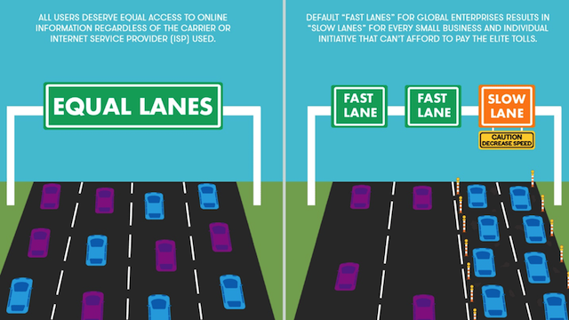

<div class="w3-modal-content w3-animate-bottom w3-round-large">
    <div class="w3-card w3-sepia articleBack w3-panel w3-round-large">
        <span onclick="document.getElementById('article-modal').style.display='none'" class="w3-button w3-text-red w3-round-large w3-display-topright">&times;</span>
        <center>
            <h2>Net Neutrality</h2>
            <hr class="w3-border-red" style="margin:auto;width:20%">
        </center>

        <p>
            Net Neutrality is like the free speech law of the Internet World. It allows us to communicate freely and stops Internet Service Providers (ISPs) such as Verizon, AT&T and Comcast from discriminating against certain content. Nobody decides which books you’re allowed to read or which shops you can visit in the real world and it’s the same on the Internet… until now. 
        </p>
            
        <h3>There’s a new sheriff in Internet-ville</h3>
        
        <p>
            Firstly, all of this only applies to the US, however the entire Internet could be affected since most Internet heavyweights reside in the States. Net Neutrality was established by the FCC in 2015, giving users strong protections. Those protections are now at risk, because the FCC has basically removed them. 
        </p>

        <p>
            In December the FCC, led by Ajit Pai, repealed Net Neutrality, causing an enormous storm of disapproval on the Internet. 
        </p>
                    
        <h3> It <i>can</i> be that bad</h3>
                    
        <p>
            Now that Net Neutrality is “gone”, ISPs can employ various techniques to harvest cash.
        </p>
                    
        <p>
            If you’re browsing the Internet for furniture, Amazon could pay your ISP (e.g. Comcast) to block eBay on your device. Google could pay to block Bing. Furthermore, ISPs could charge companies for faster websites, meaning Google’s websites would be blazing fast but “Maria’s Cookies” (or any small business) would not have the money for a fast service. 
        </p>
                    
        <p style="text-align: center">
            
        </p>
                    
        <p>
            Imagine a cycle race with multiple companies of various sizes competing. The problem is, the race is unfair. Amazon has paid the organiser to disqualify eBay, Google paid millions for a 10 second head-start and the organiser doesn’t really like Sweden so IKEA is disqualified too.
        </p>
                    
        <h3>Hope</h3>
                    
        <p>
            The battle to keep Net Neutrality is not lost. At least 6 states, including New York and California, have introduced state-level bills stopping ISPs from blocking or slowing down online content. Other states are also considering doing this. If you live in one of these states, you shouldn’t see much of a difference from before.
        </p>
                    
        <h3>Conclusion</h3>
                    
        <p>
            It is undeniable that changes are coming in all aspects of the world. Often the issues associated with Net Neutrality are exaggerated, to make it seem worse than it might be. Hopefully more states will decide to keep Net Neutrality so that the Internet is a free and open medium for all. 
        </p>
                    
    </div>
            
</div>